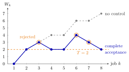

Waiting-Time Admission Control¶
Method¶
Waiting-time admission control blocks arriving jobs so that accepted jobs do not wait, or stay, longer than a threshold . Consider a FIFO single-server queue that starts empty, with inter-arrival times and service times . Let if job is accepted and if it is rejected; is the waiting time job would have if it were accepted. Section 3.3 compares three rules.
- Complete acceptance (waiting-time threshold): , and, for ,
- Complete rejection (sojourn-time threshold): the same recursion for , with the candidate sojourn time and ; at the start , , .
- Partial acceptance: job is accepted for the part of its service time that fits below the threshold,
with and .
The fraction of accepted jobs and the average waiting time of accepted jobs are
Interpretation¶
A rejected job removes its whole service time from the work that every later job must wait behind. Because the Lindley recursion carries work forward from job to job, blocking a few jobs that would join a long queue shortens the waits of many jobs after them.

The figure is Example 1, where a job arrives every time unit. Without control (grey) the waits climb . Under complete acceptance with (blue), jobs 3, 6 and 7 find a wait above the orange line and are rejected (orange rings); their service times are not added, so the next job's wait falls by one time unit and the path stays near .
The factor implements blocking without changing the input list . All rules can therefore be compared on the same simulated sample path. The rules guarantee different things. Complete acceptance bounds the wait of accepted jobs, but an accepted job can still stay up to . Complete rejection bounds the sojourn time , so it rejects every job with . Partial acceptance bounds for every job, at the price of serving only part of some jobs.
In the Week 2 psychiatrists case, capacity was adapted to the queue; here the inflow is controlled instead.
A common slip is to forget the factor , so that rejected jobs still add work (Example 3). Another is to compare the mean wait of accepted jobs under one rule with the mean wait of all jobs under another. Week 4 returns to blocking with the queue.
Key Results¶
- A rejected job adds no work: when . The original service times are never overwritten.
- Complete acceptance: every accepted job has . Complete rejection: every accepted job has , so in particular every job with is rejected. Partial acceptance: for every job.
- Under partial acceptance , so is a valid accepted amount.
- For the sample path of the notes (, , jobs) and , complete acceptance keeps about of the jobs while the average wait over all jobs drops from to and the maximum wait of accepted jobs from to .
- Complete rejection accepts more jobs () than complete acceptance () on the same input, although its test is stricter: it turns jobs away before their work enters the system.
- Rejection lowers the rate at which work enters the server, so the server utilization falls below the offered load; compare rate stability.
Examples¶
1. Eight jobs and . Let for all and . The offered work, time units in time units, far exceeds the capacity, so without control the waits grow.
| no control | CA | CA | CR | CR | CR | PA | PA | ||
|---|---|---|---|---|---|---|---|---|---|
| 1 | 3 | 0 | 0 | 1 | 0 | 3 | 0 | 0 | 2 |
| 2 | 2 | 2 | 2 | 1 | 0 | 2 | 1 | 1 | 1 |
| 3 | 2 | 3 | 3 | 0 | 1 | 3 | 0 | 1 | 1 |
| 4 | 1 | 4 | 2 | 1 | 0 | 1 | 1 | 1 | 1 |
| 5 | 3 | 4 | 2 | 1 | 0 | 3 | 0 | 1 | 1 |
| 6 | 1 | 6 | 4 | 0 | 0 | 1 | 1 | 1 | 1 |
| 7 | 2 | 6 | 3 | 0 | 0 | 2 | 1 | 1 | 1 |
| 8 | 1 | 7 | 2 | 1 | 1 | 2 | 1 | 1 | 1 |
For instance, under complete acceptance , so , and then . Without control the mean wait is . Complete acceptance (CA) accepts jobs with . Complete rejection (CR) also accepts five jobs, , but with . It turns away jobs 1 and 5, whose service times exceed , and job 3, whose candidate sojourn time is ; the accepted jobs bring only units of work, against under complete acceptance. Partial acceptance (PA) gives every job the sojourn time and serves of the units of work.
2. The notes' comparison. On the path with , and , the notes report:
| rule | accepted | mean wait, all jobs | further results |
|---|---|---|---|
| none | all | maximum wait | |
| complete acceptance | accepted jobs: mean wait , maximum | ||
| complete rejection | accepted jobs: mean service , largest service (largest overall ) | ||
| partial acceptance | every job in part | mean sojourn , mean accepted service , largest |
The mean service time is ; complete rejection accepts jobs with mean service , so it keeps the short jobs. The last two rows could not be reproduced: the seed-3 path of Queue Sample-Path Simulation, Example 2, reproduces the first two rows but gives about accepted and mean accepted service under complete rejection. The comparison points the same way.
3. Forgetting the indicator. In Example 1, suppose complete rejection is coded with , without . Then the waits are the uncontrolled ones, the candidate sojourn times are , and every job is rejected, whereas the correct rule accepts five of the eight. Rejected jobs must not add work.
Prerequisites¶
Related Concepts¶
- M/M/1/K Queue
- Batch Rejection Policy
- State-Dependent Capacity
- Balking
- Server Utilization
- Rate Stability
Sources¶
- Stochastic Operations Research · Week 3
- N. D. van Foreest, Sample Path Analysis and Simulation of Stochastic Systems, Section 3.3
Aliases: admission control, blocking jobs, job rejection rule, complete acceptance, complete rejection, partial acceptance, waiting-time threshold Keywords: I_k = \mathbf{1}{W_k \leq T}, W_k = [W_{k-1} + I_{k-1}s_{k-1} - x_k]^+, B_k = \min{T - W_k, s_k}, threshold T, acceptance fraction, blocking, sojourn-time threshold, Algorithm 3.3.2 Symbols: lambda, mu, sum
Last updated: 29 October 2026 20:42
Waiting-Time Admission ControlLindley RecursionQueue Sample-Path SimulationWaiting TimeSojourn TimeIndicator Random VariableM/M/1/K QueueBatch Rejection PolicyState-Dependent CapacityBalkingServer UtilizationRate Stability